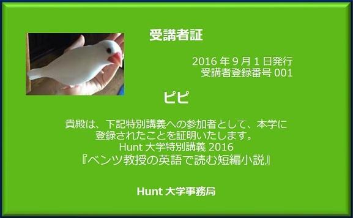
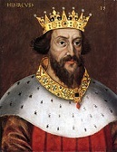
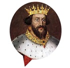
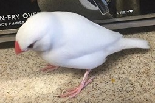
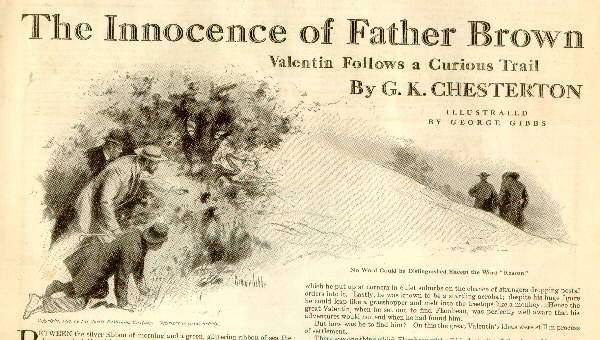
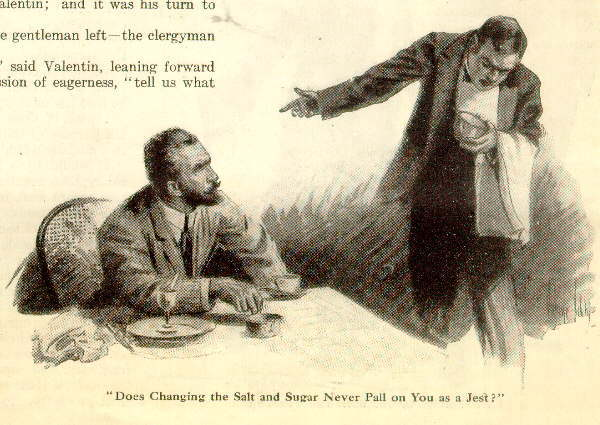
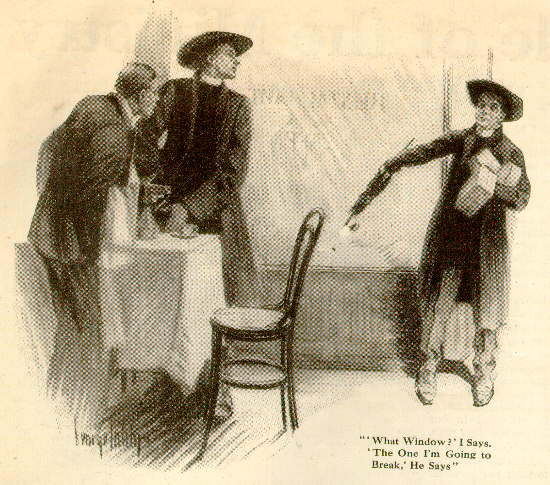
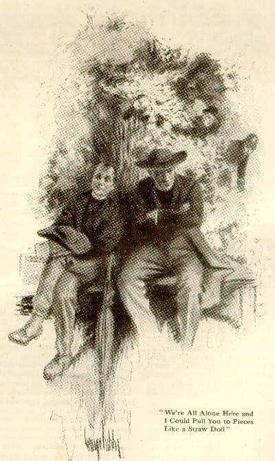
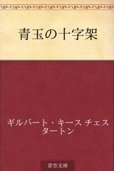
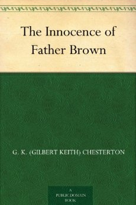

| ベンツ教授の英語で読む短編小説１G.K.チェスタトン「青い十字架」 (知は力なり！シリーズ) | |
| 金矢 真美 | |
| etwas Neues (2016) | |
ベンツ教授の英語で読む短編小説
第１回 G.K.チェスタトン「青い十字架」

Vivat academia! vivat professores!
vivat membrum quodlibet!
vivant membra quaelibet!
semper sint in flore!
アカデーミア万歳！教授達万歳！
どの学生も万歳！
すべての友人も万歳！
彼らみな常に華の中にあれ！
英国短編小説の世界へようこそ
海外小説がとにかく大好き。そして英語で読んでみたい ―。
「ベンツ教授の英語で読む短編小説」は、代表的な近代イギリス人作家の短編小説を、簡単な日本語解説を読んだあとに、原文で読んでみる本です。解説をしてくれるのは、フント大学フレンチ・ブルドッグのベンツ教授。いったん覚えた味とにおいは忘れない、そんな教授の講義をお楽しみください。
第１回 G.K. チェスタトン「青い十字架」【本書】
第２回 E.M. フォースター「天国行きの乗合馬車」
第３回 高橋教授の対訳つき「天国行きの乗合馬車」（日本語・英語対訳リンクつき）
今回の講義を受講するのは文鳥のピピさんです。さっそく受講証を発行しましょう。

現在、本講義では学生募集中です。ペットの写真と一緒に、ベンツ教授への質問をお待ちしています。これは！という質問や読書感想文は、ベンツ教授の回答つきで次号に掲載されます。
本書への質問・読書感想文とペットの写真はこちらまで：etwasneuesbooks@gmail.com
- この本は横書きでレイアウトされています。
- また、ご覧になる環境により、表示の差が認められることがあります。
- 本作品では、ルビが（ ）内に表示されています。
はじめに
みなさん、こんにちは。「英語で読む短編小説」の講義へようこそ。外国文学は苦手だという人はおりますかな。登場人物の名前が覚えられない、時代背景になじみがない、退屈だ・・・ふーむ、いろいろな意見がでましたな。しかし、苦手のみなさん・・・
おもしろい小説（novel）はたくさんありますぞ。
ところでご存知かな、実は英語のnovelは長いものしか指さないことを。「短編」はふつうshort storyと言って、別もの扱いです。ですから、私の講義では「おもしろい小説（novel）もたくさんあるけれど、それは長いからまず短くておもしろい短編（short story）に接してみよう！」というのが目標です。
「青い十字架」
第１回目は、G.K.チェスタトンの短編小説を取りあげましょう。ギルバート・キース・チェスタトン（Gilbert Keith Chesterton）は1874年生まれのイギリス人小説家で、すぐれた批評家でもありました。
今でも世界中で読まれている彼の本のなかに、小柄なカトリック神父、ブラウン神父（Father Brown）が毎回謎を解く短編集（short stories）があります。
今回は、ブラウン神父が初めて登場する「青い十字架（'The Blue Cross'）」をみなさんと一緒に読んでいきましょう。ストーリーは、刑事がある犯罪者を追跡しているところから始まります。犯罪者の名前はフランボー（Flambeau）。奇想天外なトリックで、毎回あっと言わせるのが得意なフランス人の大泥棒です。
彼を追いかけるフランス人刑事が、パリ警察のトップ、世界的に有名な調査官（the head of the Paris police and the most famous investigator of the world）であるヴァランタン（Valentin）。フランボーを追って、フランス、ベルギー、そしてイギリスにたどりついた彼は、ロンドンで行われている聖体大会（the Eucharistic Congress,世界中のカトリック教会が集まる大会）に紛れてフランボーが必ず姿を現すと考えます（Scene 1）。
「探偵（detective）」の意味
さて、ここでひとつ、みなさんがよく知っているdetectiveという単語について考えてみましょう。
ヴァランタンの役職は「調査官（investigator）」ですが、小説のなかでフランボーを追跡しているときのヴァランタンはdetectiveという単語で示されているときがあります。
実は、このdetectiveは、「（悪事など）を見つける、（正体、本質、見えにくいもの）を見抜く、看破する」を意味する動詞detectに由来する名詞で、そうした作業を職務とする人を指します。ですから、detectiveは警官や刑事を指すときもあれば、ベーカー街に住んでいるホームズや灰色の脳細胞を持つポワロのような私立探偵（private detective）を指すときもあるわけです。
【detective】
- a person, especially a police officer, whose job is to examine crimes and catch criminals. （犯罪を調査したり犯人を捕まえる仕事をする人物、特に警察官）
- a person employed by sb to find out information about sb/sth.（人や事物についての情報を探し出すために、誰かに雇われている人物）
そして、このdetectiveたちが活躍する「探偵小説」のことを英語ではdetective story（detective novel）といいます。日本語の辞書で「探偵小説」を調べてみると、「主として犯罪に関係する秘密が、論理的に解明されていく過程の興味に主眼をおいた小説」と書かれています。
つまり、犯人しか知りえない、ある「秘密」をdetectiveたちがどうやって解決するんだろう、と、解決する過程にドキドキする小説、ということです。
「青い十字架」では、探偵をするのはヴァランタン、探偵されるのはフランボーです。彼らがある一日、ロンドン市内を追いかけっこするストーリー、これだけならよくありそうな話ですが、作者であるチェスタトンはこのストーリーの中に「秘密」をたくさん入れていきます。
となると、この探偵小説というものは「ストーリー」よりも「プロット」が大切にされる小説だということにお気づきでしょうか。なになに？「ストーリー」と「プロット」の意味がいまいちよく分からない？それでは、『小説の諸相（Aspects of Novels）』の解説を借りて、このふたつの違いを説明しましょう。
ちなみに、この小説論の作者はチェスタトン同様、イギリスの作家で評論家でもあるE.M.フォースター（E.M.Forster, 1879-1970）です。彼については次回の講義でゆっくりと。
「ストーリー」と「プロット」
簡単にいえば「ストーリー」は、時間的順序に配列された諸事件の叙述です。つまり
 ⇒
「ある王様が亡くなられ、それから王妃が亡くなりました（'The king died and then the queen died'）」
といえばストーリーです。それでは「プロット」はどうなるかというと

「王様が亡くなられ、王妃が悲しみのあまり亡くなられました（'The king died, and then the queen died ofgrief' ）」
これは、亡くなった理由、つまり因果関係に重点が置かれています。
同じ時間的順序で語られていますが、王妃がなくなったのは、悲しみが原因だったということに焦点があてられています。
つまり、もう少し詳しくいうと
「王妃が亡くなり、誰もまだその理由が分からなかったのですが、のちに王様が亡くなったことを悲しむあまりだということが分かりました（'The queen died, no one knew why, until it was discovered that it was through grief at the death of the king'）」
王様の亡くなったことをいう前に、王妃の死について語られています。そして、理由が分からなかった、だが、どうやら「王様の死」が原因だったらしい、と時間的順序を中断して、ストーリーから離れています。
ストーリーなら「それからどうした？（And then?）」となりますが、プロットなら「なぜか？（Why?）」となるわけです。
推理小説ではこの「プロット」が重視される意味がお分かりいただけたでしょうか。そして、「プロット」は好奇心だけでは読めません。「プロット」を理解しようとするには「知性（intelligence）」と「記憶力（memory）」が必要になるのです。
もう一度いいますぞ、「知性」と「ごはん」！

教授・・・
知性と記憶力は密接に関連しています。知性は、新しい事実を捉えるために必要なものです。その事実をふたつの観点から、ひとつは孤立したものと見てみる、次にそれがでてくるまでの前のページにあったほかの事実と関連させて見る力です。そして記憶力は・・・記憶していなければ事実を理解することができませんね。
上記の王様の例でいえば、王様が亡くなった事実は覚えておかないと王妃が亡くなった理由が分からなくなります。また、王様の死、以外にもいろいろな伏線が現れたとき、読者はそれらをどのようにつなぎ合わせていくべきか考えながら読まなければなりません。
登場人物のポイントをおさえよう！
大泥棒フランボーを追跡するヴァランタンは、ロンドンに向かう列車のなかで小柄なカトリック神父（a very short Roman Catholic priest）に出会います。その神父はロンドンで行われている聖体大会に向かうところでしたが、自分が持っている「青い宝石（サファイア）付き」の純銀製の品物（something made of real silver "with blue stones"）の話をだれかれかまわずにしているのを聞いて、ヴァランタンは、その品物についてあまり言わない方がいい、と神父に忠告をします（Scene 3）。
もう皆さんお分かりかと思いますが、このサファイア付きの純銀製の品物がタイトルの'The Blue Cross'です。非常に高価な純銀製の十字架を運ぶ神父、それを盗もうとする大泥棒、それを阻止しようとする大探偵。主役はそろいましたな。
登場人物
- ヴァランタン：パリ警察のトップで、世界的に有名な調査官。現在、大泥棒のフランボーを追跡中。
- フランボー：6フィート6インチもある大男の大泥棒。世間をあっといわせる斬新なトリックで盗みを働くが、血を流したことは一度もない。
- ブラウン神父：エセックス州の小さな村からやってきた小柄な神父。丸くて鈍感そうな顔をしてシャベル帽（shovel hat）をかぶり、大きな使い古したこうもり傘（a large, shabby umbrella）とサファイア付きの銀の十字架を持っている。
小説のポイントをおさえよう！
ヴァランタンの追跡ルールその１
ロンドンに着いたヴァランタンは、フランボーがねらいそうな銀行や密会所には行かずに、路地や空き家、小道などに入り込みます。
「もしどこかに追跡者の目につくような奇妙なところがあれば、それは追跡される人間の目にもつくはずである（...because there was just the chance that anyoddity that caught the eye of the pursuer might be the same that had caught the eye of the pursued.）」とヴァランタン。
そして彼はこう考えます。「誰だってどこからか始めなければならない、だからほかの人間が止めたと思えるところを出発点にしたほうがいい（Somewhere a man must begin, and it had better be just where another man might stop.）」
一見奇妙な説明ですが、実際ヴァランタンの追跡は、ある一軒のお店で朝食をとっているとき「奇妙なところ（oddity）」の発見から始まります。まさに、そこがスタート地点であり、おそらくフランボーの去った地点。
ヴァランタンの追跡ルールその２
次々と現れる奇妙な出来事。それはまるでヴァランタンが追跡しやすいように目印をつけているとしか思えません。途中、イギリス人の警部と刑事の応援を得て、3人は乗合馬車の2階に乗り込みます。「タクシーなら10倍も速いのに」という警部の言葉にヴァランタンは答えます。「行き先が分かればね」
そして追跡する（detect）心構えとして、ヴァランタンはふたりの警察官にこう言います。
「きみがある人物のすることを知っているなら、彼の目の前に行けばいい。だが、彼が何をしようとしているのか当てたかったら、後をついて行くのがいい。その人物が道に迷うときには、自分も迷う。立ち止まったら、立ち止まる。ゆっくり行くならゆっくりと。そうすれば、きみは彼と同じものを見るだろうし、彼のしたことを自分もすることになる。われわれのできることはただひとつ、何か奇妙なものを見落とさないよう、つねに気を配ることなんだ（"If you know what a man's doing, get in front of him; but if you want to guess what he's doing,keep behind him. Stray when he stray; stop when he stops; travel as slowly as he. Then you may see what he saw and may act as he acted. All we can do is to keep our eyes skinned for a queer thing."）」
最初の奇妙な出来事が残された店（Scene 5）では「ふたり連れの聖職者（two clergymen）」というヒントが。3つ目の奇妙な出来事があった料理店（Scene 8）での証言で、ひとりはこうもり傘を持っている、ということが分ります。
ひょっとしたら、あの人のよい小柄な神父が事件に巻き込まれている可能性が十分なのでは？ そして彼の連れというのはもしかしらたら？
みなさんの知性と記憶力を発揮するところです。
ブラウン神父の活躍
この物語のおもしろさは、追う者と追われる者との知恵比べです。行く先々で奇妙な手がかりを残しているのは、フランボーなのでしょうか、ブラウン神父なのでしょうか。ブラウン神父の持っている宝物は無事なのでしょうか。
ストーリーの中ではふたりの神父の行動だけが記されていて、そのあたりが謎につつまれています。みなさん、ここをよく覚えておいてください。どのお店でどんなことが起こったのか、その奇妙なことはどちらの神父が行ったことなのか、そしてこれが肝心 ―あなたがブラウン神父だったらどうしますか。
エンディングはいかに？！
推理小説のだいご味は「結末」です。たいていの推理小説では、今までの謎を解き明かす結末が待っています。
物語の終盤 ― 夕方近く、ふたりの神父がベンチにすわって話し込んでいます。ひとりは小柄、ひとりは大男。それを盗み聞きするヴァランタンとふたりの警察官。関係者一同が集まる、推理小説ではよく見かけるシーンです。
フランボーに言い聞かせるように説明するブラウン神父の語り（Scene 13）は胸のすく「結末」です。さあ、ブラウン神父との知恵比べ、いや、小説家チェスタトンとの知恵比べを堪能してください。
特別インタビュー
本日は、特別ゲストとして、英文学者の高橋和久教授とネットでつながっています。
ベンツ教授：これから学生のみなさんに「青い十字架」を英語で読んでもらうのですが、高橋教授から何かアドバイスをいただけるでしょうか。
高橋教授：うーん・・・この物語でおもしろいのは、ヴァランタンの位置づけというか、彼とブラウン神父の関係というか、その関係が探偵と犯人の関係をなぞっているように見える点というか、ブラウン神父が早い段階でフランボーのことをアヤシイやつ、って見抜いている点というか・・・ネタばれになりますか？
ベンツ教授：ま、大丈夫ですな。
高橋教授：最後のシーンは、物語の中の謎がブラウン神父の説明で解決されるわけですから、そこはがんばって読んでほしい。でも、謎解きとは関係ないところ、たとえば、最初のほうかな、ヴァランタンがどんな人だ、とか、そういう説明については、多少分からなくても大丈夫だから、どんどん読み進めてください。
ベンツ教授：まずは話の筋全体が分かるまで何度か読んでみてもよいですな。
高橋教授：そうですね。全体を読んでみてから気になるところを再読してもよいかもしれません。Scene13が「結末」部分なので、そこを読む前に何度か繰り返して読んでみるとか。
ベンツ教授：おいしい「結末」はとっておいて、ですな。
高橋教授：はい。
ベンツ教授：ところで、高橋教授はイギリスの小説を中心に翻訳されておりますが、このブラウン神父シリーズは翻訳されてますか。
高橋教授：いいえ。でも、ほかの方の翻訳本が何冊かでていますよ。分からないところは翻訳本に頼っていいと思います。
ベンツ教授：いちばんよいのは、この「青い十字架」を高橋教授が翻訳をしてくださるとですな・・・
高橋教授：え？
ベンツ教授：皆さんにも具合がよろしいかと・・・
高橋教授：え？
The Blue Cross
From The Innocence of Father Brown by G. K. Chesterton

これはアメリカの雑誌「サタデー・イヴニング・ポスト（The Saturday Evening Post）」（1910）に掲載されたときのイラストで、短編集のタイトルThe Innocence of Father Brownのあとには'The Blue Cross'ではなく'Valentin Follows a Curious Trail'というタイトルになっています。物語の内容を具体的に表していますね。
Scene 1: ヴァランタン登場
パリ警察のヴァランタン（Valentin）が、今世紀最大の捕り物をするために（to make the greatest arrest of the century）ブリュッセルからイギリス行きの船に乗り込むところ。彼が追いかけているのは、もちろん、あの大泥棒フランボー（Flambeau）です。世界中からカトリック神父が集まる聖体大会（the Eucharistic Congress）がロンドンで開催されていたため、それに紛れてフランボーがひと仕事をすると、ヴァランタンは考えたのです。
＊＊＊＊＊＊＊
Between the silver ribbon of morning and the green glittering ribbon of sea, the boat touched Harwich and let loose a swarm of folk like flies, among whom the man we must follow was by no means conspicuous ― nor wished to be. There was nothing notable about him, except a slight contrast between the holiday gaiety of his clothes and the official gravity of his face. His clothes included a slight, pale grey jacket, a white waistcoat, and a silver straw hat with a grey-blue ribbon. His lean face was dark by contrast, and ended in a curt black beard that looked Spanish and suggested an Elizabethan ruff. He was smoking a cigarette with the seriousness of an idler. There was nothing about him to indicate the fact that the grey jacket covered a loaded revolver, that the white waistcoat covered a police card, or that the straw hat covered one of the most powerful intellects in Europe. For this was Valentin himself, the head of the Paris police and the most famous investigator of the world; and he was coming from Brussels to London to make the greatest arrest of the century.
Flambeau was in England. The police of three countries had tracked the great criminal at last from Ghent to Brussels, from Brussels to the Hook of Holland; and it was conjectured that he would take some advantage of the unfamiliarity and confusion of the Eucharistic Congress, then taking place in London. Probably he would travel as some minor clerk or secretary connected with it; but, of course, Valentin could not be certain; nobody could be certain about Flambeau.
Scene 2: 大泥棒フランボーとは
身軽な離れ業を得意とするフランボーは、予審判事（juge d'instruction）をさかさまに抱えるような恐ろしい腕力を持っていたにもかかわらず、血を流すような犯罪とは無縁です。いつも斬新な手口を使い、物語になるような盗みを働いてきました。たとえば牧場も牛も車もミルクもないのに顧客に牛乳を販売する会社を運営したり、ひとりの旅行者をだますだけのための大がかりないたずらをしたり。
＊＊＊＊＊＊＊
It is many years now since this colossus of crime suddenly ceased keeping the world in a turmoil; and when he ceased, as they said after the death of Roland, there was a great quiet upon the earth. But in his best days (I mean, of course, his worst) Flambeau was a figure as statuesque and international as the Kaiser. Almost every morning the daily paper announced that he had escaped the consequences of one extraordinary crime by cotting another. He was a Gascon of gigantic stature and bodily daring; and the wildest tales were told of his outbursts of athletic humour; how he turned the juged'instructionupside down and stood him on his head, "to clear his mind"; how he ran down the Rue de Rivoli with a policeman under each arm. It is due to him to say that his fantastic physical strength was generally employed in such bloodless though undignified scenes; his real crimes were chiefly those of ingenious and wholesale robbery. But each of his thefts was almost a new sin, and would make a story by itself. It was he who ran the great Tyrolean Dairy Company in London, with no dairies, no cows, no carts, no milk, but with some thousand subscribers. These he served by the simple operation of moving the little milk cans outside people's doors to the doors of his own customers. It was he who had kept up an unaccountable and close correspondence with a young lady whose whole letter-bag was intercepted, by the extraordinary trick of photographing his messages infinitesimally small upon the slides of a microscope. A sweeping simplicity, however, marked many of his experiments. It is said that he once repainted all the numbers in a street in the dead of night merely to divert one traveller into a trap. It is quite certain that he invented a portable pillar-box, which he put up at corners in quiet suburbs on the chance of strangers dropping postal orders into it. Lastly, he was known to be a startling acrobat; despite his huge figure, he could leap like a grasshopper and melt into the tree-tops like a monkey. Hence the great Valentin, when he set out to find Flambeau, was perfectly aware that his adventures would not end when he had found him.
Scene 3: ヴァランタン、イギリスに到着
ハリッジ（Harwich）に到着したヴァランタンはそこからロンドン行きの鉄道に乗り込みました。もちろん、大男に気をつけながら。でも、鉄道に乗り込んできたのは3人の小柄な人たちだけでした。そのなかのひとり、エッセクス州の小さな村（a small Essex village）からやってきた丸くてぼんやりとした顔つきの神父は、聖体大会用の宝物を持参するところだということを言いふらしているため、ヴァランタンは他人に言わないほうがいいですよ（not to take care of the silver by telling everybody about it）、と親切にアドバイスします。
＊＊＊＊＊＊＊
But how was he to find him? On this the great Valentin's ideas were still in process of settlement.
There was one thing which Flambeau, with all his dexterity of disguise, could not cover, and that was his singular height. If Valentin's quick eye had caught a tall apple-woman, a tall grenadier, or even a tolerably tall duchess, he might have arrested them on the spot. But all along his train there was nobody that could be a disguised Flambeau, any more than a cat could be a disguised giraffe. About the people on the boat he had already satisfied himself; and the people picked up at Harwich or on the journey limited themselves with certainty to six. There was a short railway official travelling up to the terminus, three fairly short market gardeners picked up two stations afterwards, one very short widow lady going up from a small Essex town, and a very short Roman Catholic priest going up from a small Essex village. When it came to the last case, Valentin gave it up and almost laughed. The little priest was so much the essence of those Eastern flats; he had a face as round and dull as a Norfolk dumpling; he had eyes as empty as the North Sea; he had several brown paper parcels, which he was quite incapable of collecting. The Eucharistic Congress had doubtless sucked out of their local stagnation many such creatures, blind and helpless, like moles disinterred. Valentin was a sceptic in the severe style of France, and could have no love for priests. But he could have pity for them, and this one might have provoked pity in anybody. He had a large, shabby umbrella, which constantly fell on the floor. He did not seem to know which was the right end of his return ticket. He explained with a moon-calf simplicity to everybody in the carriage that he had to be careful, because he had something made of real silver "with blue stones" in one of his brown-paper parcels. His quaint blending of Essex flatness with saintly simplicity continuously amused the Frenchman till the priest arrived (somehow) at Tottenham with all his parcels, and came back for his umbrella. When he did the last, Valentin even had the good nature to warn him not to take care of the silver by telling everybody about it. But to whomever he talked, Valentin kept his eye open for someone else; he looked out steadily for anyone, rich or poor, male or female, who was well up to six feet; for Flambeau was four inches above it.
Scene 4: ヴァランタン・ルール
「知恵とは予想できないものまでも考慮に入れておくもの（wisdom should reckon on the unforeseen.）」。今回の場合、何か思いがけないものがヴァランタンにとって手がかりになりそうです。手始めに、彼は一軒のレストランに入りました。
＊＊＊＊＊＊＊
He alighted at Liverpool Street, however, quite conscientiously secure that he had not missed the criminal so far. He then went to Scotland Yard to regularise his position and arrange for help in case of need; he then lit another cigarette and went for a long stroll in the streets of London. As he was walking in the streets and squares beyond Victoria, he paused suddenly and stood. It was a quaint, quiet square, very typical of London, full of an accidental stillness. The tall, flat houses round looked at once prosperous and uninhabited; the square of shrubbery in the centre looked as deserted as a green Pacific islet. One of the four sides was much higher than the rest, like a dais; and the line of this side was broken by one of London's admirable accidents ― a restaurant that looked as if it had strayed from Soho. It was an unreasonably attractive object, with dwarf plants in pots and long, striped blinds of lemon yellow and white. It stood specially high above the street, and in the usual patchwork way of London, a flight of steps from the street ran up to meet the front door almost as a fire-escape might run up to a first-floor window. Valentin stood and smoked in front of the yellow-white blinds and considered them long.
The most incredible thing about miracles is that they happen. A few clouds in heaven do come together into the staring shape of one human eye. A tree does stand up in the landscape of a doubtful journey in the exact and elaborate shape of a note of interrogation. I have seen both these things myself within the last few days. Nelson does die in the instant of victory; and a man named Williams does quite accidentally murder a man named Williamson; it sounds like a sort of infanticide. In short, there is in life an element of elfin coincidence which people reckoning on the prosaic may perpetually miss. As it has been well expressed in the paradox of Poe, wisdom should reckon on the unforeseen.
Aristide Valentin was unfathomably French; and the French intelligence is intelligence specially and solely. He was not "a thinking machine"; for that is a brainless phrase of modern fatalism and materialism. A machine only is a machine because it cannot think. But he was a thinking man, and a plain man at the same time. All his wonderful successes, that looked like conjuring, had been gained by plodding logic, by clear and commonplace French thought. The French electrify the world not by starting any paradox, they electrify it by carrying out a truism. They carry a truism so far--as in the French Revolution. But exactly because Valentin understood reason, he understood the limits of reason. Only a man who knows nothing of motors talks of motoring without petrol; only a man who knows nothing of reason talks of reasoning without strong, undisputed first principles. Here he had no strong first principles. Flambeau had been missed at Harwich; and if he was in London at all, he might be anything from a tall tramp on Wimbledon Common to a tall toast-master at the Hotel Metropole. In such a naked state of nescience, Valentin had a view and a method of his own.
In such cases he reckoned on the unforeseen. In such cases, when he could not follow the train of the reasonable, he coldly and carefully followed the train of the unreasonable. Instead of going to the right places ― banks, police stations, rendezvous ― he systematically went to the wrong places; knocked at every empty house, turned down every cul de sac, went up every lane blocked with rubbish, went round every crescent that led him uselessly out of the way. He defended this crazy course quite logically. He said that if one had a clue this was the worst way; but if one had no clue at all it was the best, because there was just the chance that any oddity that caught the eye of the pursuer might be the same that had caught the eye of the pursued. Somewhere a man must begin, and it had better be just where another man might stop. Something about that flight of steps up to the shop, something about the quietude and quaintness of the restaurant, roused all the detective's rare romantic fancy and made him resolve to strike at random. He went up the steps, and sitting down at a table by the window, asked for a cup of black coffee.
Scene 5: ヴァランタン、第１の「目印」を発見
「犯罪者は独創的な芸術家だが、探偵はただの批評家だな（The criminal is the creative artist; the detective only the critic.）」ヴァランタンは、フランボーのことを考えながらコーヒーに砂糖を入れてかきまわし、飲んだとたん、それが塩だったのに気づきます。なぜ砂糖つぼの中に塩が入っているのでしょうか。
さらにおかしなことに、今朝ふたりの神父が朝食をとったあと、帰りにひとりが壁にスープを投げつけた（threw soup at the wall）、と店の者がいうのです。

かなり動揺していますね
＊＊＊＊＊＊＊
It was half-way through the morning, and he had not breakfasted; the slight litter of other breakfasts stood about on the table to remind him of his hunger; and adding a poached egg to his order, he proceeded musingly to shake some white sugar into his coffee, thinking all the time about Flambeau. He remembered how Flambeau had escaped, once by a pair of nail scissors, and once by a house on fire; once by having to pay for an unstamped letter, and once by getting people to look through a telescope at a comet that might destroy the world. He thought his detective brain as good as the criminal's, which was true. But he fully realised the disadvantage. "The criminal is the creative artist; the detective only the critic," he said with a sour smile, and lifted his coffee cup to his lips slowly, and put it down very quickly. He had put salt in it.
He looked at the vessel from which the silvery powder had come; it was certainly a sugar-basin; as unmistakably meant for sugar as a champagne-bottle for champagne. He wondered why they should keep salt in it. He looked to see if there were any more orthodox vessels. Yes; there were two salt-cellars quite full. Perhaps there was some speciality in the condiment in the salt-cellars. He tasted it; it was sugar. Then he looked round at the restaurant with a refreshed air of interest, to see if there were any other traces of that singular artistic taste which puts the sugar in the salt-cellars and the salt in the sugar-basin. Except for an odd splash of some dark fluid on one of the white-papered walls, the whole place appeared neat, cheerful and ordinary. He rang the bell for the waiter.
When that official hurried up, fuzzy-haired and somewhat blear-eyed at that early hour, the detective (who was not without an appreciation of the simpler forms of humour) asked him to taste the sugar and see if it was up to the high reputation of the hotel. The result was that the waiter yawned suddenly and woke up.
"Do you play this delicate joke on your customers every morning?" inquired Valentin. "Does changing the salt and sugar never pall on you as a jest?"
The waiter, when this irony grew clearer, stammeringly assured him that the establishment had certainly no such intention; it must be a most curious mistake. He picked up the sugar-basin and looked at it; he picked up the salt-cellar and looked at that, his face growing more and more bewildered. At last he abruptly excused himself, and hurrying away, returned in a few seconds with the proprietor. The proprietor also examined the sugar-basin and then the salt-cellar; the proprietor also looked bewildered.
Suddenly the waiter seemed to grow inarticulate with a rush of words.
"I zink," he stuttered eagerly, "I zink it is those two clergy-men."
"What two clergymen?"
"The two clergymen," said the waiter, "that threw soup at the wall."
"Threw soup at the wall?" repeated Valentin, feeling sure this must be some singular Italian metaphor.
"Yes, yes," said the attendant excitedly, and pointed at the dark splash on the white paper; "threw it over there on the wall."
Valentin looked his query at the proprietor, who came to his rescue with fuller reports.
"Yes, sir," he said, "it's quite true, though I don't suppose it has anything to do with the sugar and salt. Two clergymen came in and drank soup here very early, as soon as the shutters were taken down. They were both very quiet, respectable people; one of them paid the bill and went out; the other, who seemed a slower coach altogether, was some minutes longer getting his things together. But he went at last. Only, the instant before he stepped into the street he deliberately picked up his cup, which he had only half emptied, and threw the soup slap on the wall. I was in the back room myself, and so was the waiter; so I could only rush out in time to find the wall splashed and the shop empty. It don't do any particular damage, but it was confounded cheek; and I tried to catch the men in the street. They were too far off though; I only noticed they went round the next corner into Carstairs Street."
Scene 6: ヴァランタン、第２の「目印」を発見
途中で野菜と果物を売っている店の前にくると、今度はナッツとオレンジの山（two heaps, of oranges and of nuts）の上にある名札の位置が代わっていることに気づいたヴァランタン。さっそく店主にそのことを伝えると、店主は「彼ら」がリンゴの山をひっくり返していったことを怒りながら教えてくれました。
＊＊＊＊＊＊＊
The detective was on his feet, hat settled and stick in hand. He had already decided that in the universal darkness of his mind he could only follow the first odd finger that pointed; and this finger was odd enough. Paying his bill and clashing the glass doors behind him, he was soon swinging round into the other street.
It was fortunate that even in such fevered moments his eye was cool and quick. Something in a shop-front went by him like a mere flash; yet he went back to look at it. The shop was a popular greengrocer and fruiterer's, an array of goods set out in the open air and plainly ticketed with their names and prices. In the two most prominent compartments were two heaps, of oranges and of nuts respectively. On the heap of nuts lay a scrap of cardboard, on which was written in bold, blue chalk, "Best tangerine oranges, two a penny." On the oranges was the equally clear and exact description, "Finest Brazil nuts, 4d. a lb." M. Valentin looked at these two placards and fancied he had met this highly subtle form of humour before, and that somewhat recently. He drew the attention of the red-faced fruiterer, who was looking rather sullenly up and down the street, to this inaccuracy in his advertisements. The fruiterer said nothing, but sharply put each card into its proper place. The detective, leaning elegantly on his walking-cane, continued to scrutinise the shop. At last he said, "Pray excuse my apparent irrelevance, my good sir, but I should like to ask you a question in experimental psychology and the association of ideas."
The red-faced shopman regarded him with an eye of menace; but he continued gaily, swinging his cane, "Why," he pursued, "why are two tickets wrongly placed in a greengrocer's shop like a shovel hat that has come to London for a holiday? Or, in case I do not make myself clear, what is the mystical association which connects the idea of nuts marked as oranges with the idea of two clergymen, one tall and the other short?"
The eyes of the tradesman stood out of his head like a snail's; he really seemed for an instant likely to fling himself upon the stranger. At last he stammered angrily: "I don't know what you 'ave to do with it, but if you're one of their friends, you can tell 'em from me that I'll knock their silly 'eads off, parsons or no parsons, if they upset my apples again."
"Indeed?" asked the detective, with great sympathy. "Did they upset your apples?"
"One of 'em did," said the heated shopman; "rolled 'em all over the street. I'd 'ave caught the fool but for havin' to pick 'em up."
"Which way did these parsons go?" asked Valentin.
"Up that second road on the left-hand side, and then across the square," said the other promptly.
Scene 7: ヴァランタン、仲間を増やして追跡再開
追跡途中で警官に応援を頼み、追跡する相手は「広ぶちのシャベル帽（shovel hat）をかぶったふたり連れの神父」ということしか分からないため、彼らは乗合馬車（omnibus）にゆられながら町の中の「おかしなこと（any sort of queer thing）」をさがします。
＊＊＊＊＊＊＊
"Thanks," replied Valentin, and vanished like a fairy. On the other side of the second square he found a policeman, and said: "This is urgent, constable; have you seen two clergymen in shovel hats?"
The policeman began to chuckle heavily. "I 'ave, sir; and if you arst me, one of 'em was drunk. He stood in the middle of the road that bewildered that ―"
"Which way did they go?" snapped Valentin.
"They took one of them yellow buses over there," answered the man; "them that go to Hampstead."
Valentin produced his official card and said very rapidly: "Call up two of your men to come with me in pursuit," and crossed the road with such contagious energy that the ponderous policeman was moved to almost agile obedience. In a minute and a half the French detective was joined on the opposite pavement by an inspector and a man in plain clothes.
"Well, sir," began the former, with smiling importance, "and what may ―?"
Valentin pointed suddenly with his cane. "I'll tell you on the top of that omnibus," he said, and was darting and dodging across the tangle of the traffic. When all three sank panting on the top seats of the yellow vehicle, the inspector said: "We could go four times as quick in a taxi."
"Quite true," replied their leader placidly, "if we only had an idea of where we were going."
"Well, where are you going?" asked the other, staring.
Valentin smoked frowningly for a few seconds; then, removing his cigarette, he said: "If you know what a man's doing, get in front of him; but if you want to guess what he's doing, keep behind him. Stray when he strays; stop when he stops; travel as slowly as he. Then you may see what he saw and may act as he acted. All we can do is to keep our eyes skinned for a queer thing."
"What sort of queer thing do you mean?" asked the inspector.
"Any sort of queer thing," answered Valentin, and relapsed into obstinate silence.
The yellow omnibus crawled up the northern roads for what seemed like hours on end; the great detective would not explain further, and perhaps his assistants felt a silent and growing doubt of his errand. Perhaps, also, they felt a silent and growing desire for lunch, for the hours crept long past the normal luncheon hour, and the long roads of the North London suburbs seemed to shoot out into length after length like an infernal telescope. It was one of those journeys on which a man perpetually feels that now at last he must have come to the end of the universe, and then finds he has only come to the beginning of Tufnell Park. London died away in draggled taverns and dreary scrubs, and then was unaccountably born again in blazing high streets and blatant hotels. It was like passing through thirteen separate vulgar cities all just touching each other. But though the winter twilight was already threatening the road ahead of them, the Parisian detective still sat silent and watchful, eyeing the frontage of the streets that slid by on either side. By the time they had left Camden Town behind, the policemen were nearly asleep; at least, they gave something like a jump as Valentin leapt erect, struck a hand on each man's shoulder, and shouted to the driver to stop.
Scene 8: ヴァランタン、第３の「目印」を発見
りっぱなレストランの窓ガラスが割られていたのを発見したヴァランタンはさっそく警察官たちと一緒にウエイターから事情をききます。「彼ら」は請求書より余分の料金を支払ったあと、ひとりが「すまないね、これはその窓の弁償なんだ（ `Sorry to confuse your accounts, but it'll pay for the window.' ）」と返事をすると、傘で窓を割ったのです。

よいですか、割りますぞ・・・
＊＊＊＊＊＊＊＊
They tumbled down the steps into the road without realizing why they had been dislodged; when they looked round for enlightenment they found Valentin triumphantly pointing his finger towards a window on the left side of the road. It was a large window, forming part of the long facade of a gilt and palatial public-house; it was the part reserved for respectable dining, and labelled "Restaurant." This window, like all the rest along the frontage of the hotel, was of frosted and figured glass; but in the middle of it was a big, black smash, like a star in the ice.
"Our cue at last," cried Valentin, waving his stick; "the place with the broken window."
"What window? What cue?" asked his principal assistant. "Why, what proof is there that this has anything to do with them?"
Valentin almost broke his bamboo stick with rage.
"Proof!" he cried. "Good God! the man is looking for proof! Why, of course, the chances are twenty to one that it has nothing to do with them. But what else can we do? Don't you see we must either follow one wild possibility or else go home to bed?" He banged his way into the restaurant, followed by his companions, and they were soon seated at a late luncheon at a little table, and looked at the star of smashed glass from the inside. Not that it was very informative to them even then.
"Got your window broken, I see," said Valentin to the waiter as he paid the bill.
"Yes, sir," answered the attendant, bending busily over the change, to which Valentin silently added an enormous tip. The waiter straightened himself with mild but unmistakable animation.
"Ah, yes, sir," he said. "Very odd thing, that, sir."
"Indeed?" Tell us about it," said the detective with careless curiosity.
"Well, two gents in black came in," said the waiter; "two of those foreign parsons that are running about. They had a cheap and quiet little lunch, and one of them paid for it and went out. The other was just going out to join him when I looked at my change again and found he'd paid me more than three times too much. `Here,' I says to the chap who was nearly out of the door, `you've paid too much.' `Oh,' he says, very cool, `have we?' 'Yes,' I says, and picks up the bill to show him. Well, that was a knock-out."
"What do you mean?" asked his interlocutor.
"Well, I'd have sworn on seven Bibles that I'd put 4s. on that bill. But now I saw I'd put 14s., as plain as paint."
"Well?" cried Valentin, moving slowly, but with burning eyes, "and then?"
"The parson at the door he says all serene, `Sorry to confuse your accounts, but it'll pay for the window.' `What window?' I says. `The one I'm going to break,' he says, and smashed that blessed pane with his umbrella."
All three inquirers made an exclamation; and the inspector said under his breath, "Are we after escaped lunatics?" The waiter went on with some relish for the ridiculous story:
"I was so knocked silly for a second, I couldn't do anything. The man marched out of the place and joined his friend just round the corner. Then they went so quick up Bullock Street that I couldn't catch them, though I ran round the bars to do it."
"Bullock Street," said the detective, and shot up that thoroughfare as quickly as the strange couple he pursued.
Scene 9: ヴァランタン、第４の「目印」を発見
いつしか時刻は夕暮れ時。ハムステッド・ヒース（Hampstead Heath）へ行く途中のお菓子屋さん（a little garish sweetstuff shop）でヴァランタンは、「彼ら」のうちの一方の神父が茶色の小包を見かけたら自分の代わりに送っておいてほしい（if it should turn up, please post it to this address）、と店員に頼んだことをききだしました。
＊＊＊＊＊＊＊
Their journey now took them through bare brick ways like tunnels; streets with few lights and even with few windows; streets that seemed built out of the blank backs of everything and everywhere. Dusk was deepening, and it was not easy even for the London policemen to guess in what exact direction they were treading. The inspector, however, was pretty certain that they would eventually strike some part of Hampstead Heath. Abruptly one bulging gas-lit window broke the blue twilight like a bull's-eye lantern; and Valentin stopped an instant before a little garish sweetstuff shop. After an instant's hesitation he went in; he stood amid the gaudy colours of the confectionery with entire gravity and bought thirteen chocolate cigars with a certain care. He was clearly preparing an opening; but he did not need one.
An angular, elderly young woman in the shop had regarded his elegant appearance with a merely automatic inquiry; but when she saw the door behind him blocked with the blue uniform of the inspector, her eyes seemed to wake up.
"Oh," she said, "if you've come about that parcel, I've sent it off already."
"Parcel?" repeated Valentin; and it was his turn to look inquiring.
"I mean the parcel the gentleman left ― the clergyman gentleman."
"For goodness' sake," said Valentin, leaning forward with his first real confession of eagerness, "for Heaven's sake tell us what happened exactly."
"Well," said the woman a little doubtfully, "the clergymen came in about half an hour ago and bought some peppermints and talked a bit, and then went off towards the Heath. But a second after, one of them runs back into the shop and says, `Have I left a parcel!' Well, I looked everywhere and couldn't see one; so he says, `Never mind; but if it should turn up, please post it to this address,' and he left me the address and a shilling for my trouble. And sure enough, though I thought I'd looked everywhere, I found he'd left a brown paper parcel, so I posted it to the place he said. I can't remember the address now; it was somewhere in Westminster. But as the thing seemed so important, I thought perhaps the police had come about it."
"So they have," said Valentin shortly. "Is Hampstead Heath near here?"
"Straight on for fifteen minutes," said the woman, "and you'll come right out on the open." Valentin sprang out of the shop and began to run. The other detectives followed him at a reluctant trot.
Scene 10: ヴァランタンの推理
公園にはふたりの神父がいました。ひとりは列車の中で見かけた小柄な神父、もうひとりは6フィート以上ある大柄な神父 ― フランボーでした。ヴァランタンの頭の中で、あの神父が持っていた青い十字架の宝物とフランボーが結びついたのです。
＊＊＊＊＊＊＊
The street they threaded was so narrow and shut in by shadows that when they came out unexpectedly into the void common and vast sky they were startled to find the evening still so light and clear. A perfect dome of peacock-green sank into gold amid the blackening trees and the dark violet distances. The glowing green tint was just deep enough to pick out in points of crystal one or two stars. All that was left of the daylight lay in a golden glitter across the edge of Hampstead and that popular hollow which is called the Vale of Health. The holiday makers who roam this region had not wholly dispersed; a few couples sat shapelessly on benches; and here and there a distant girl still shrieked in one of the swings. The glory of heaven deepened and darkened around the sublime vulgarity of man; and standing on the slope and looking across the valley, Valentin beheld the thing which he sought.
Among the black and breaking groups in that distance was one especially black which did not break ― a group of two figures clerically clad. Though they seemed as small as insects, Valentin could see that one of them was much smaller than the other. Though the other had a student's stoop and an inconspicuous manner, he could see that the man was well over six feet high. He shut his teeth and went forward, whirling his stick impatiently. By the time he had substantially diminished the distance and magnified the two black figures as in a vast microscope, he had perceived something else; something which startled him, and yet which he had somehow expected. Whoever was the tall priest, there could be no doubt about the identity of the short one. It was his friend of the Harwich train, the stumpy little cure of Essex whom he had warned about his brown paper parcels.
Scene 11: ヴァランタンのジレンマ
探偵としてのヴァランタンの仕事は成功したにもかかわらず、彼には一連のおかしなことと十字架を盗むことの関係が分かりませんでした。ヴァランタンは犯人をしっかり握りながら、手がかりはまだ握っていない（Here he had grasped the criminal, but still he could not grasp the clue.）のです。
＊＊＊＊＊＊＊
Now, so far as this went, everything fitted in finally and rationally enough. Valentin had learned by his inquiries that morning that a Father Brown from Essex was bringing up a silver cross with sapphires, a relic of considerable value, to show some of the foreign priests at the congress. This undoubtedly was the "silver with blue stones"; and Father Brown undoubtedly was the little greenhorn in the train. Now there was nothing wonderful about the fact that what Valentin had found out Flambeau had also found out; Flambeau found out everything. Also there was nothing wonderful in the fact that when Flambeau heard of a sapphire cross he should try to steal it; that was the most natural thing in all natural history. And most certainly there was nothing wonderful about the fact that Flambeau should have it all his own way with such a silly sheep as the man with the umbrella and the parcels. He was the sort of man whom anybody could lead on a string to the North Pole; it was not surprising that an actor like Flambeau, dressed as another priest, could lead him to Hampstead Heath. So far the crime seemed clear enough; and while the detective pitied the priest for his helplessness, he almost despised Flambeau for condescending to so gullible a victim. But when Valentin thought of all that had happened in between, of all that had led him to his triumph, he racked his brains for the smallest rhyme or reason in it. What had the stealing of a blue-and-silver cross from a priest from Essex to do with chucking soup at wall paper? What had it to do with calling nuts oranges, or with paying for windows first and breaking them afterwards? He had come to the end of his chase; yet somehow he had missed the middle of it. When he failed (which was seldom), he had usually grasped the clue, but nevertheless missed the criminal. Here he had grasped the criminal, but still he could not grasp the clue.
Scene 12: ふたりの神父
ふたりの神父は、ベンチにすわって理性（reason）について語り始めます。背の高い神父が理性に批判的であるのに対し、背の低い神父は、理性が常に正当なもの（reason is always reasonable）だと主張します。ヴァランタンは、茂みの中から信心深いふたりの話を聞いているうちに、ひょっとしたら大失敗をしたのかもしれない、と不安に駆られます。
＊＊＊＊＊＊＊
The two figures that they followed were crawling like black flies across the huge green contour of a hill. They were evidently sunk in conversation, and perhaps did not notice where they were going; but they were certainly going to the wilder and more silent heights of the Heath. As their pursuers gained on them, the latter had to use the undignified attitudes of the deer-stalker, to crouch behind clumps of trees and even to crawl prostrate in deep grass. By these ungainly ingenuities the hunters even came close enough to the quarry to hear the murmur of the discussion, but no word could be distinguished except the word "reason" recurring frequently in a high and almost childish voice. Once over an abrupt dip of land and a dense tangle of thickets, the detectives actually lost the two figures they were following. They did not find the trail again for an agonising ten minutes, and then it led round the brow of a great dome of hill overlooking an amphitheatre of rich and desolate sunset scenery. Under a tree in this commanding yet neglected spot was an old ramshackle wooden seat. On this seat sat the two priests still in serious speech together. The gorgeous green and gold still clung to the darkening horizon; but the dome above was turning slowly from peacock-green to peacock-blue, and the stars detached themselves more and more like solid jewels. Mutely motioning to his followers, Valentin contrived to creep up behind the big branching tree, and, standing there in deathly silence, heard the words of the strange priests for the first time.
After he had listened for a minute and a half, he was gripped by a devilish doubt. Perhaps he had dragged the two English policemen to the wastes of a nocturnal heath on an errand no saner than seeking figs on its thistles. For the two priests were talking exactly like priests, piously, with learning and leisure, about the most aerial enigmas of theology. The little Essex priest spoke the more simply, with his round face turned to the strengthening stars; the other talked with his head bowed, as if he were not even worthy to look at them. But no more innocently clerical conversation could have been heard in any white Italian cloister or black Spanish cathedral.
The first he heard was the tail of one of Father Brown's sentences, which ended: "... what they really meant in the Middle Ages by the heavens being incorruptible."
The taller priest nodded his bowed head and said:
"Ah, yes, these modern infidels appeal to their reason; but who can look at those millions of worlds and not feel that there may well be wonderful universes above us where reason is utterly unreasonable?"
"No," said the other priest; "reason is always reasonable, even in the last limbo, in the lost borderland of things. I know that people charge the Church with lowering reason, but it is just the other way. Alone on earth, the Church makes reason really supreme. Alone on earth, the Church affirms that God himself is bound by reason."
The other priest raised his austere face to the spangled sky and said:
"Yet who knows if in that infinite universe ―?"
"Only infinite physically," said the little priest, turning sharply in his seat, "not infinite in the sense of escaping from the laws of truth."
Valentin behind his tree was tearing his fingernails with silent fury. He seemed almost to hear the sniggers of the English detectives whom he had brought so far on a fantastic guess only to listen to the metaphysical gossip of two mild old parsons. In his impatience he lost the equally elaborate answer of the tall cleric, and when he listened again it was again Father Brown who was speaking:
"Reason and justice grip the remotest and the loneliest star. Look at those stars. Don't they look as if they were single diamonds and sapphires? Well, you can imagine any mad botany or geology you please. Think of forests of adamant with leaves of brilliants. Think the moon is a blue moon, a single elephantine sapphire. But don't fancy that all that frantic astronomy would make the smallest difference to the reason and justice of conduct. On plains of opal, under cliffs cut out of pearl, you would still find a notice-board, `Thou shalt not steal.'"
Valentin was just in the act of rising from his rigid and crouching attitude and creeping away as softly as might be, felled by the one great folly of his life. But something in the very silence of the tall priest made him stop until the latter spoke. When at last he did speak, he said simply, his head bowed and his hands on his knees:
"Well, I think that other worlds may perhaps rise higher than our reason. The mystery of heaven is unfathomable, and I for one can only bow my head."
Scene 13: フランボー対ブラウン神父
神父の仮面をかなぐりすてたフランボーが、ブラウン神父に十字架をよこすように迫ります。ところが、フランボーは思いもかけない話をブラウン神父から聞くはめに・・・。ここからはラストまで一気に読んでみましょう。
＊＊＊＊＊＊＊

話はいいから、れいのアレを！
はてさて？
＊＊＊＊＊＊＊
Then, with brow yet bent and without changing by the faintest shade his attitude or voice, he added:
"Just hand over that sapphire cross of yours, will you? We're all alone here, and I could pull you to pieces like a straw doll."
The utterly unaltered voice and attitude added a strange violence to that shocking change of speech. But the guarder of the relic only seemed to turn his head by the smallest section of the compass. He seemed still to have a somewhat foolish face turned to the stars. Perhaps he had not understood. Or, perhaps, he had understood and sat rigid with terror.
"Yes," said the tall priest, in the same low voice and in the same still posture, "yes, I am Flambeau."
Then, after a pause, he said:
"Come, will you give me that cross?"
"No," said the other, and the monosyllable had an odd sound.
Flambeau suddenly flung off all his pontifical pretensions. The great robber leaned back in his seat and laughed low but long.
"No," he cried, "you won't give it me, you proud prelate. You won't give it me, you little celibate simpleton. Shall I tell you why you won't give it me? Because I've got it already in my own breast-pocket."
The small man from Essex turned what seemed to be a dazed face in the dusk, and said, with the timid eagerness of "The Private Secretary":
"Are ― are you sure?"
Flambeau yelled with delight.
"Really, you're as good as a three-act farce," he cried. "Yes, you turnip, I am quite sure. I had the sense to make a duplicate of the right parcel, and now, my friend, you've got the duplicate and I've got the jewels. An old dodge, Father Brown ― a very old dodge."
"Yes," said Father Brown, and passed his hand through his hair with the same strange vagueness of manner. "Yes, I've heard of it before."
The colossus of crime leaned over to the little rustic priest with a sort of sudden interest.
"You have heard of it?" he asked. "Where have you heard of it?"
"Well, I mustn't tell you his name, of course," said the little man simply. "He was a penitent, you know. He had lived prosperously for about twenty years entirely on duplicate brown paper parcels. And so, you see, when I began to suspect you, I thought of this poor chap's way of doing it at once."
"Began to suspect me?" repeated the outlaw with increased intensity. "Did you really have the gumption to suspect me just because I brought you up to this bare part of the heath?"
"No, no," said Brown with an air of apology. "You see, I suspected you when we first met. It's that little bulge up the sleeve where you people have the spiked bracelet."
"How in Tartarus," cried Flambeau, "did you ever hear of the spiked bracelet?"
"Oh, one's little flock, you know!" said Father Brown, arching his eyebrows rather blankly. "When I was a curate in Hartlepool, there were three of them with spiked bracelets. So, as I suspected you from the first, don't you see, I made sure that the cross should go safe, anyhow. I'm afraid I watched you, you know. So at last I saw you change the parcels. Then, don't you see, I changed them back again. And then I left the right one behind."
"Left it behind?" repeated Flambeau, and for the first time there was another note in his voice beside his triumph.
"Well, it was like this," said the little priest, speaking in the same unaffected way. "I went back to that sweet-shop and asked if I'd left a parcel, and gave them a particular address if it turned up. Well, I knew I hadn't; but when I went away again I did. So, instead of running after me with that valuable parcel, they have sent it flying to a friend of mine in Westminster." Then he added rather sadly: "I learnt that, too, from a poor fellow in Hartlepool. He used to do it with handbags he stole at railway stations, but he's in a monastery now. Oh, one gets to know, you know," he added, rubbing his head again with the same sort of desperate apology. "We can't help being priests. People come and tell us these things."
Flambeau tore a brown-paper parcel out of his inner pocket and rent it in pieces. There was nothing but paper and sticks of lead inside it. He sprang to his feet with a gigantic gesture, and cried:
"I don't believe you. I don't believe a bumpkin like you could manage all that. I believe you've still got the stuff on you, and if you don't give it up ― why, we're all alone, and I'll take it by force!"
"No," said Father Brown simply, and stood up also, "you won't take it by force. First, because I really haven't still got it. And, second, because we are not alone."
Flambeau stopped in his stride forward.
"Behind that tree," said Father Brown, pointing, "are two strong policemen and the greatest detective alive. How did they come here, do you ask? Why, I brought them, of course! How did I do it? Why, I'll tell you if you like! Lord bless you, we have to know twenty such things when we work among the criminal classes! Well, I wasn't sure you were a thief, and it would never do to make a scandal against one of our own clergy. So I just tested you to see if anything would make you show yourself. A man generally makes a small scene if he finds salt in his coffee; if he doesn't, he has some reason for keeping quiet. I changed the salt and sugar, and you kept quiet. A man generally objects if his bill is three times too big. If he pays it, he has some motive for passing unnoticed. I altered your bill, and you paid it."
The world seemed waiting for Flambeau to leap like a tiger. But he was held back as by a spell; he was stunned with the utmost curiosity.
"Well," went on Father Brown, with lumbering lucidity, "as you wouldn't leave any tracks for the police, of course somebody had to. At every place we went to, I took care to do something that would get us talked about for the rest of the day. I didn't do much harm--a splashed wall, spilt apples, a broken window; but I saved the cross, as the cross will always be saved. It is at Westminster by now. I rather wonder you didn't stop it with the Donkey's Whistle."
"With the what?" asked Flambeau.
"I'm glad you've never heard of it," said the priest, making a face. "It's a foul thing. I'm sure you're too good a man for a Whistler. I couldn't have countered it even with the Spots myself; I'm not strong enough in the legs."
"What on earth are you talking about?" asked the other.
"Well, I did think you'd know the Spots," said Father Brown, agreeably surprised. "Oh, you can't have gone so very wrong yet!"
"How in blazes do you know all these horrors?" cried Flambeau.
The shadow of a smile crossed the round, simple face of his clerical opponent.
"Oh, by being a celibate simpleton, I suppose," he said. "Has it never struck you that a man who does next to nothing but hear men's real sins is not likely to be wholly unaware of human evil? But, as a matter of fact, another part of my trade, too, made me sure you weren't a priest."
"What?" asked the thief, almost gaping.
"You attacked reason," said Father Brown. "It's bad theology."
And even as he turned away to collect his property, the three policemen came out from under the twilight trees. Flambeau was an artist and a sportsman. He stepped back and swept Valentin a great bow.
"Do not bow to me, mon ami," said Valentin with silver clearness. "Let us both bow to our master."
And they both stood an instant uncovered while the little Essex priest blinked about for his umbrella.
(7484 words)
最後に
皆さん、いかがでしたか。ブラウン神父の推理と手腕に、フランボーもヴァランタンも文字通り脱帽するシーンで終わる、ちょっとおしゃれなラストシーンでしたね。「青い十字架」で初登場したブラウン神父は、このあとさまざまな難事件を解決します。フランボーも、最初はブラウン神父に追われる身でしたが、途中からはprivate detectiveとなってブラウン神父を手伝います。
英語で読む、といっても、理解できなかった部分がかなりあったぞ、という学生の皆さんへ。ベンツ教授のインタビューで、高橋教授がおっしゃっていたことを思い出してください。「分からないところは、翻訳された本と比較しながら読む」という方法です。分からないところだけでなく、プロの翻訳家たちがどんな風に登場人物たちを訳しているのか読み比べるのも楽しいですね。ここで何冊か紹介しましょう。
◆日本語で読むなら
『ブラウン神父の無心』（南條 竹則・坂本 あおい訳、ちくま文庫）
『ブラウン神父の無垢なる事件簿』（田口 俊樹訳、ハヤカワ・ミステリ文庫）
『ブラウン神父の純智１』 （橋本 福夫訳、グーテンベルク２１、Kindle版）
『青玉の十字架 』（ 直木 三十五訳、Kindle版）＊青空文庫（無料）

◆英語で読むなら
「青い十字架」のほかにも名作短編ばかりが入っているThe Innocence of Father Brownをダウンロードして読んでみましょう。

The Innocence of Father Brown (English Edition) Kindle版＊無料
Kindleアプリの機能を使おう！
Kindle端末で英語の本を読むとき、使ってみたいさまざまな機能があります。
◆Word Wise：これは難しい単語を、簡単な英語で書き下してくれる機能です。この機能に対応している図書の場合は、画面の右下にあるWord Wiseという文字にタッチすると、「表示」「非表示」を選択できます。また、表示の度合い、たくさん表示するか、あまり必要なければ少なく表示するか、も調整できます。KindleストアでWord Wise対応、というカテゴリーの中から図書を選んでみましょう。
◆読み上げ機能：同じく画面右下にある読み上げ機能を使えば、リスニングの練習になります。たとえば、スマートフォン（アンドロイド）の場合はTalk Backという機能をオンにしてからKindleアプリを起動すると読み上げてくれます。Kindle端末機についてはこちらを。
そのほかにも、マーカー機能や辞書機能など充実した機能がついている端末をお使いの学生さんたちは、いろいろと試してみてください。意外と「英語で読む」ということが楽しくなります。
おつかれさまでした
- プレート File:GILBERT_KEITH_CHESTERTON_1874-1936_POET_NOVELIST_AND_CRITIC_lived_here.jpg 16:05, 15 September 2016(UTC) License=CC BY-SA 4.0
- ティアラ File:Diad%C3%A8me_de_limp%C3%A9ratrice_Eug%C3%A9nie_(mus%C3%A9e_du_Louvre)_(7166066743).jpg 16:09, 15 September 2016(UTC) License=CC BY-SA 2.0
- シャベル帽 File:CappelloRomano.JPG 16:12, 15 September 2016(UTC) License=CC BY-SA 3.0
IFについて

- この図書は、デジタル配信用です。
- 本作品の内容あるいはデータを、全部・一部にかかわらず、無断で複製、転載、改ざん、改変、公衆送信（インターネット上への掲載を含む）することは、法律で禁止されています。また、個人的な使用を目的とする複製であっても、コピーガードなどの著作権保護技術を解除して行うことはできません。
Etwas Neues Booksのお知らせ


知は力なり！ ベンツ教授の＜英語で読む短編小説＞シリーズ


知は力なり！ ルーカス教授の＜エル・システマ入門＞シリーズ
ご存じフント大学のイケメンゴールデン・レトリバーのルーカス教授がお贈りする音楽の世界！

素敵な質問にはプレゼントを考え中・・・
＜エル・システマ情報とともに、シリーズ発刊予定です！お見逃しなく！＞
知は力なり！ シャムス教授の＜考古学入門＞シリーズ
カッツェン大学のシャムス教授がお贈りする「考古学」の魅力120％の入門書

楽しい質問やペットの写真を送ってくださった読者には、毎セクション１名にシャムス教授よりトートバッグのプレゼント！


＜以下、順次発刊予定です！お見逃しなく！＞